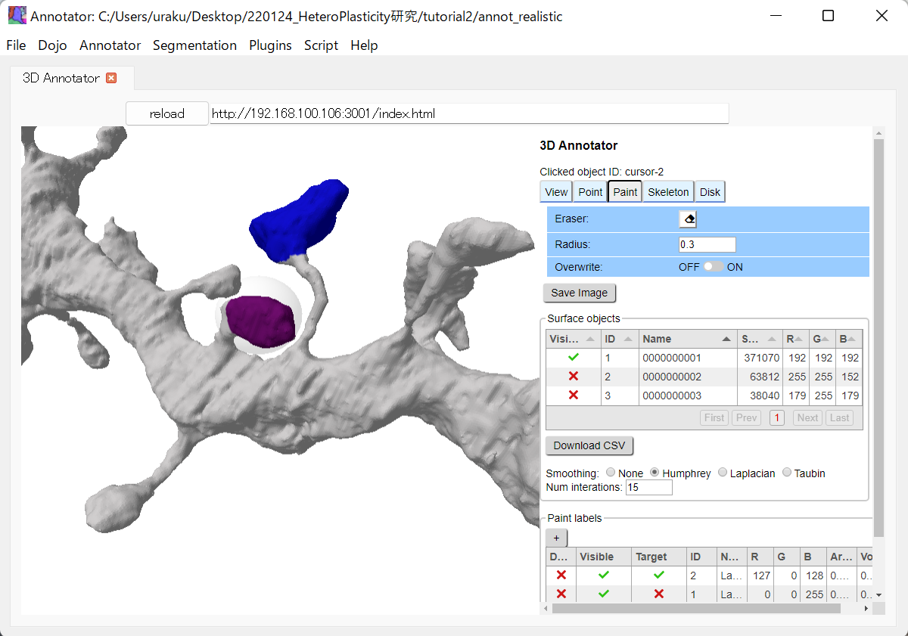

4.2. Label spines using UNI-EM
In tutorial 1, the target spine was labeled by its re-generation. This method cannot be used for morphologically realistic spines. We thus developed the software to manually label the realistic spines or any other region-of-interests, which is named as UNI-EM annotator.
The installation and usage of UNI-EM annotator are described elsewhere. We here introduce the function save_uniem_annotator to convert data to the format of UNI-EM annotator (Line 26 in 21_convert_to_annotator.py). In this function, ‘pitch’ denotes the unit length of each voxel, and ‘volume’ contains the objects of the realistic dendrite (1: cytosol, 2: mitochondrion, 3: ER).The dict variable ‘surfaces’ contains the volume ids, surface vertices and faces, and colors. This function generates the files of UNI-EM annotator in the directory specified by ‘annot_folder’.
1import sys, os
2import h5py
3from pyLD import save_uniem_annotator
4
5filename = 'models/realistic_dendrite.h5'
6annot_folder = 'annot_realistic'
7
8with h5py.File(filename,'r') as f:
9 bound_v = f['bound vertices'][()]
10 bound_f = f['bound faces'][()]
11 mito_v = f['mito vertices'][()]
12 mito_f = f['mito faces'][()]
13 er_v = f['er vertices'][()]
14 er_f = f['er faces'][()]
15 volume = f['volume'][()]
16 pitch = f['unit length (um)'][()]
17
18
19bound_color = [192,192,192]
20mito_color = [255,255,152]
21er_color = [179,255,179]
22surfaces = {1: [bound_v, bound_f, bound_color],\
23 2: [mito_v , mito_f , mito_color],\
24 3: [er_v , er_f , er_color]}
25
26save_uniem_annotator(annot_folder, pitch, volume.astype('uint16'), surfaces)
UNI-EM annotator has a paint function to label 3D surfaces. Users can label any region-of-interests (Figure below).
{kind=link}
The class method ‘exec’ generates the volume that contains labeled volumes. This function is realized by the Python module Pymeshfix that makes closed surface meshes and re-voxelizes the closed surfaces (Line 9; Figure below). The label volume is saved in the container ‘label volume’ of the HDF file ‘models/labels_realistic.h5’ (Lines 6, 10).
1import sys, os
2from pyLD import *
3
4annot_folder = 'annot_realistic'
5object_id = 1
6output_label_file = 'models/labels_realistic.h5'
7
8c = CreateLabelVolumeFromUniEM(annot_folder)
9c.exec(object_id)
10c.save(output_label_file)
{kind=link}
Finally, the labeled surface regions are visualized by the script ‘23_show_label.py’. The labeled spines would be colored as shown in Figure below. Based on the labeled shape, users can simulate molecular interactions and evaluate the simulation results.
1import sys, os
2import numpy as np
3import h5py
4from mayavi import mlab
5from pyLD import *
6
7input_file = 'models/realistic_dendrite.h5'
8input_label_file = 'models/labels_realistic.h5'
9output_image_file = 'imgs/labels_realistic.png'
10
11with h5py.File(input_file, 'r') as f:
12 ref_volume = f['volume'][()]
13
14with h5py.File(input_label_file, 'r') as f:
15 label_volume = f['label volume'][()]
16 label_ids = f['label ids'][()]
17
18
19mlab.figure(bgcolor=(1.0,1.0,1.0), size=(700,400))
20
21pitch = 1
22for id in label_ids:
23 s = CreateSurface(label_volume == id, pitch)
24 color = tuple(np.random.rand(3))
25 mlab.triangular_mesh(s.vertices[:,0], s.vertices[:,1], s.vertices[:,2],\
26 s.faces, color=color, opacity=0.3)
27
28d = CreateSurface( (ref_volume == 1) ^ (label_volume > 0), pitch)
29color = (0.8,0.8,0.8)
30mlab.triangular_mesh(d.vertices[:,0], d.vertices[:,1], d.vertices[:,2],\
31 d.faces, color=color, opacity=0.3)
32
33mlab.plot3d( [0, 0],[128/2, 128/2], [20, 20+1/0.02],color=(0.7,0.7,0.7),tube_radius=2.5)
34mlab.text3d( -15, 128/2, 25, '1 um', scale=10,color=(0.2,0.2,0.2))
35mlab.view(90, 90, 500, [192/2, 128/2, 480/2], 90)
36mlab.savefig(output_image_file)
37mlab.show()
{kind=link}